Quatre services précis, une même exigence : des résultats que vous pouvez vérifier.
Chaque service a son offre, ses prix publiés et un exemple complet à télécharger. Une personne relit chaque livrable ; les faits, montants et fichiers sont contrôlés par des scripts, pas par l'IA.
- ATLAS Studio · collection

SignalDeskRecherche commerciale qualifiéeSachez qui contacter, et pourquoi — preuve à l'appui.dès 290 USD - ATLAS Studio · collection
 LocaloomCatalogues e-commerce FR/ENUn catalogue bilingue fidèle à vos produits.dès 180 USD
LocaloomCatalogues e-commerce FR/ENUn catalogue bilingue fidèle à vos produits.dès 180 USD - ATLAS Studio · collectionFlowPatchAutomatisations administratives fiablesUne automatisation que vous pouvez suivre, arrêter et reprendre.dès 350 USD
- ATLAS Studio · collectionCareerLiftDossiers de candidature FR/ENUne candidature fidèle à votre parcours, que vous pouvez défendre.dès 340 USD
La règle de la maison
- Un exemple complet, ouvrable et téléchargeable, pour chaque service.
- Des prix publiés et des limites écrites avant toute commande.
- Les faits, nombres et fichiers contrôlés par des scripts déterministes.
- Une personne relit chaque livrable avant remise ; 14 jours de retours.
IA et relecture humaine
Des modèles d'IA servent à préparer des brouillons. Chaque élément livré est vérifié par une personne, et les contrôles de faits, de montants et de fichiers sont faits par des scripts déterministes — pas par l'IA. Les données de votre dossier ne sont pas envoyées à un service d'IA tiers.
Fenêtre de retours de 14 jours après remise. Accusé de réception sous 2 jours ouvrés (UTC). Une erreur de notre part est corrigée sans frais ; un changement de cible ou une nouvelle demande fait l'objet d'un devis.